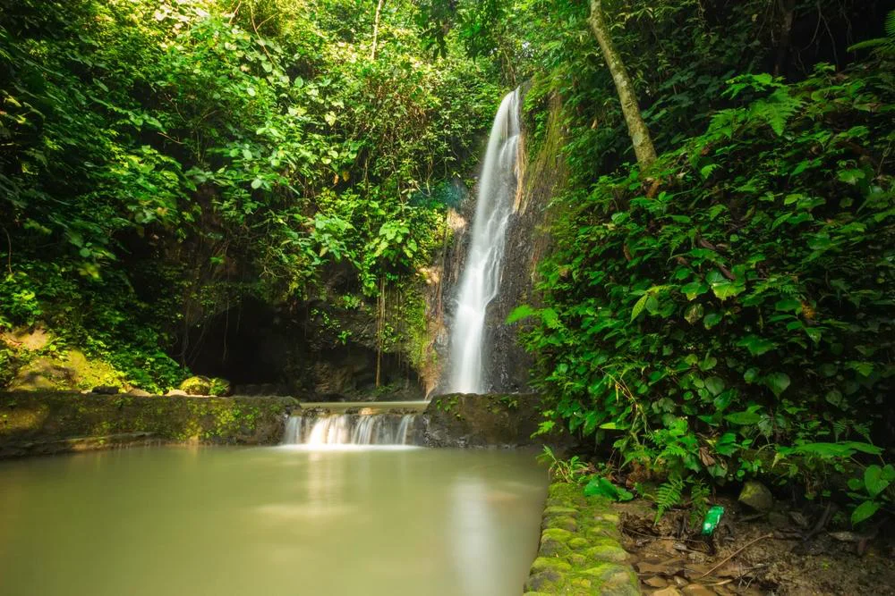

Air Terjun Batu Putu

Air Terjun Batu Putu terletak di Desa Batu Putu, Kecamatan Teluk Betung Utara, Kota Bandar Lampung, Lampung.
Area wisata ini memiliki luas sekitar 15 hektare dan menawarkan pemandangan alam yang mempesona, termasuk
kolam pemandian dan sungai di bawah air terjun. Aksesnya mudah dicapai dari pusat kota dengan waktu tempuh
sekitar 15-45 menit, tergantung titik keberangkatan. Pengelolaannya berada di bawah Pemkot Bandar Lampung
dan tidak ada biaya masuk, sehingga menjadi destinasi alam yang terjangkau dan menyegarkan bagi wisatawan.
Pemantauan Kualitas Air

Pemantauan kualitas air di Air Terjun Batu Putu dilakukan dengan mengukur parameter penting seperti pH, suhu,
dan kelembapan air. Penggunaan alat pH meter secara rutin membantu mengontrol keseimbangan keasaman air
untuk menjaga ekosistem tetap sehat. Suhu air dicatat untuk mendukung habitat biota air dan menjaga
kenyamanan pengunjung. Kelembapan juga diperhatikan karena mempengaruhi kondisi mikroklimat di sekitar air
terjun. Pengendalian kualitas air ini penting untuk memastikan kelestarian lingkungan dan keamanan
pengunjung.
AMTAST AMT-03R

AMTAST AMT-03R adalah alat ukur kualitas air yang dapat mengukur banyak parameter sekaligus seperti pH,
ORP, suhu, TDS, dan salinitas. Alat ini sering digunakan pada penelitian air, industri, hingga pengolahan air.
Cara Penggunaan:
- Kalibrasi alat menggunakan cairan standar.
- Celupkan probe ke air yang diuji.
- Tunggu hasil stabil dan baca di layar.
- Bersihkan probe setelah selesai.
Horiba U-53-2

Horiba U-53-2 adalah alat pengukur kualitas air profesional yang dapat mengukur pH, suhu, oksigen terlarut,
dan konduktivitas. Alat ini sangat akurat dan cocok digunakan di lapangan.
Cara Penggunaan:
- Buka dan bilas elektroda sebelum digunakan.
- Kalibrasi alat menggunakan larutan buffer.
- Celupkan sensor ke air dan baca hasilnya.
- Bersihkan alat setelah selesai.
HHBK
HHBK (Hasil Hutan Bukan Kayu) adalah hasil hutan selain kayu, seperti rotan, damar, madu, hingga buah-buahan
hutan. Di Batu Putu, dua HHBK utama adalah buah pala dan kemiri.
Buah Pala

Buah pala dapat diolah menjadi slay pala dan produk lainnya yang mendukung ekonomi lokal.
Buah Kemiri

Kemiri banyak diolah menjadi minyak kemiri untuk perawatan rambut dan kulit. Ampasnya dapat dijadikan bahan
biopelet sebagai bahan bakar ramah lingkungan.